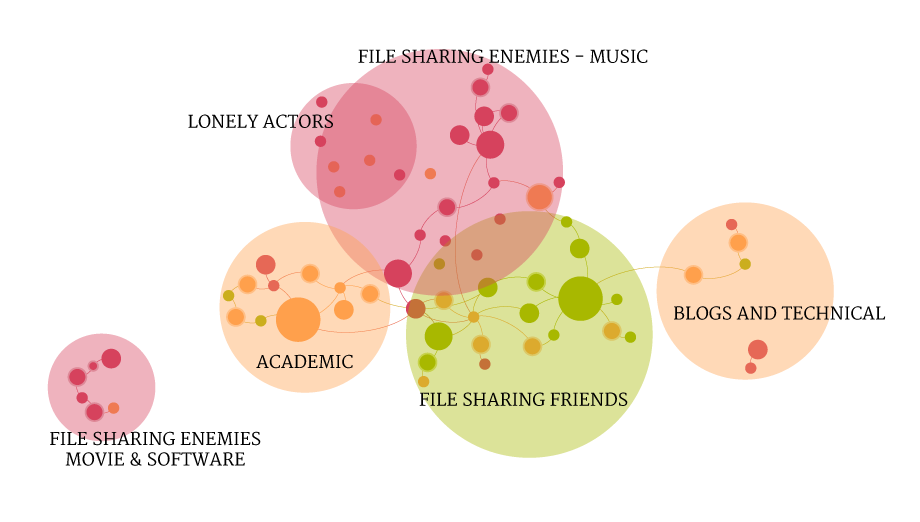

Findings
First of all, there is a strong division in the network: on the top, the file sharing enemies actors, with all the majors close to each other; on the bottom-center, the file sharing friends actors, mixed with various media and newspapers.
On the left side there is the “academic” cluster, with online libraries and the most important independent professors who wrote articles about the controversy. On the extreme left, out of the main connections, there is the group of Movie majors and software main actors.
On the right there is a more strange and heterogeneous group, with blogs and technical entities.
As single nodes, on the top left, there are several actors, who are quite relevant for the controversy but, apparently, have really small in common with the main connections. Especially, a first role actor like Lamar Smith, the politician who proposed SOPA law, is not connected with any other entity: this means that, on the web, he has no direct connections with the ones who pushed for the law, RIAA and MPAA, and that this link is probably private and/or personal, due to commercial or, probably, lobbying factors.

Another finding, taken from the first one, is that there are few connections overall, especially between the two main sides: the controversy is really polarized. Moreover, the most important interconnections are mainly Neutral actors. The graph shows that the Enemies side is really "public" and common inside webpages talking about the controversy: Enemies are a very solid network, some kind of army who fights for one goal, in which everyone has strong relationship with everyone else. On the other side, though, the Friends cluster is solid too. The connections between the two sides are always Neutrals, but the interesting thing is that the Friends cluster is made but heterogeneous actors, with different interests and visions. There are free culture ambassadors, professors, legal entities, bloggers, all united by the sympathy for file sharing, but not the real file sharing entities: no P2P services apart from the lonely BitTorrent, no trackers, no torrent blogs apart from the small node of TorrentFreak. Eventually, the real file sharing side, against which the Enemies are fighting, are not visible through web pages analysis.